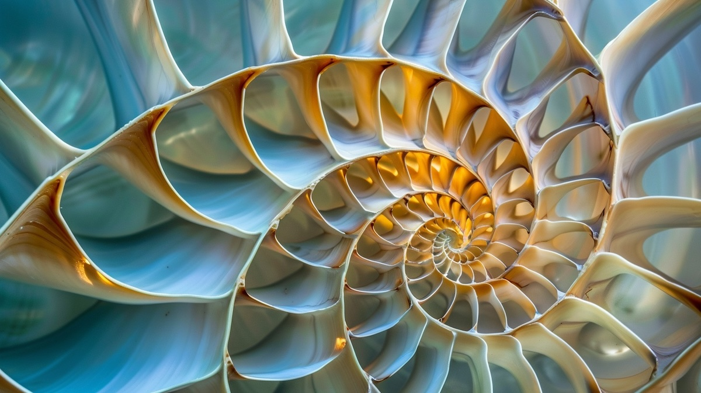

Fotoğrafçılıkta Altın Oran ve 1/3 Kuralı: Kusursuz Kompozisyonun Anahtarları
Fotoğrafçılıkta mükemmel bir kompozisyon oluşturmak, bir kareyi etkileyici ve dikkat çekici hale getiren en önemli faktörlerden biridir. Altın oran ve 1/3 kuralı, fotoğrafçıların kompozisyonu kusursuzlaştırmalarına yardımcı olan iki temel tekniktir. Bu iki yöntem, farklı yaklaşımlarla olsa da, görsel dengeyi ve estetiği artırarak izleyiciye güçlü bir görsel deneyim sunar. Peki, altın oran ve 1/3 kuralı nedir? Nasıl kullanılır? Hangi durumda hangisini tercih etmelisiniz? Gelin, bu iki tekniği daha yakından inceleyelim.
Altın Oran Nedir?
Altın oran, yaklaşık olarak 1.618 değerine sahip matematiksel bir oran olup, doğada ve sanatta sıkça karşımıza çıkar. Antik Yunan’dan bu yana mimarlık, resim ve fotoğrafçılık gibi birçok alanda estetik dengenin sırrı olarak kullanılmıştır. Fotoğrafçılıkta altın oran, kompozisyonun daha doğal ve dikkat çekici görünmesini sağlayan bir araçtır. Bu orana göre, bir fotoğrafı bölen çizgiler ve kesişim noktaları, izleyicinin dikkatini çekecek odak noktalarını belirler.

Altın oranı kullanarak fotoğraflarınızı daha çekici hale getirmek için altın spiral veya altın dikdörtgen gibi şekillerden yararlanabilirsiniz. Bu formlar, fotoğrafın kritik noktalarını belirlemenize yardımcı olur. Ana öğeleri bu şekillerin kesişim noktalarına veya çizgilerine yerleştirdiğinizde, kompozisyon çok daha dengeli ve estetik görünür. Örneğin, bir manzara fotoğrafında dağları veya ağaçları altın oran çizgilerine hizalamak, izleyicinin gözünü doğal bir akışla bu detaylara yönlendirecektir.
1/3 Kuralı Nedir?
Fotoğrafçılıkta 1/3 kuralı, kompozisyon oluşturmanın daha basit ama son derece etkili bir yoludur. Bu kural, bir görüntüyü yatay ve dikey olarak üçer eşit parçaya bölen iki yatay ve iki dikey çizgi ile ana öğeleri bu çizgiler ya da kesişim noktalarına yerleştirmeyi önerir. Gözümüz doğal olarak bu noktalara yöneldiği için, 1/3 kuralı fotoğrafı daha dengeli ve estetik kılar.

Örneğin, bir portre fotoğrafında modelin gözlerini tam ortada değil, üst yatay çizgi boyunca hizaladığınızda, izleyici gözlerini doğrudan modele çekecektir. Aynı şekilde manzara fotoğraflarında ufuk çizgisini ortalamak yerine, üst veya alt çizgilere yerleştirerek derinlik ve denge yaratabilirsiniz.
Altın Oran ve 1/3 Kuralı Arasındaki Farklar
Her iki teknik de kompozisyonu geliştirirken farklı yaklaşımlar sunar. 1/3 kuralı, daha basit ve hızlı bir rehberdir. Çoğu dijital fotoğraf makinesi veya akıllı telefon, çekim sırasında ızgara çizgilerini görüntüleme imkânı sunar, bu da 1/3 kuralını kolayca uygulamanıza olanak tanır. Altın oran ise daha karmaşık bir yapı sunar ve derin matematiksel bir temele dayanır. Genellikle daha estetik ve sofistike kompozisyonlar oluşturmak için tercih edilir.
Altın oran doğadan ilham alırken, 1/3 kuralı daha evrensel bir kullanım sunar. Altın oran daha fazla hesaplama gerektirir ve fotoğraflarınızı sonradan düzenlerken de uygulanabilir. Buna karşılık, 1/3 kuralı genellikle çekim anında hızlıca uygulanabilecek bir tekniktir.
Hangi Durumda Hangi Tekniği Kullanmalısınız?
Altın oran, daha sanatsal ve estetik kaygılar taşıyan çekimlerde etkili olabilir. Özellikle portre, mimari veya doğa fotoğraflarında altın oranı kullanarak görsel dengeyi yakalayabilirsiniz. Fotoğrafın matematiksel bir denge üzerine kurulu olduğu bu kompozisyonlar, izleyiciye daha derin bir görsel deneyim sunar.
1/3 kuralı ise daha çok günlük çekimlerde, sokak fotoğrafçılığında, portrelerde ve manzara fotoğraflarında pratik bir çözüm sunar. Daha hızlı uygulanabilir ve başlangıç seviyesi fotoğrafçılar için idealdir. Fotoğrafçılığa yeni başlayanlar, 1/3 kuralını öğrenerek kompozisyon becerilerini hızla geliştirebilirler.
Altın Oran ve 1/3 Kuralını Birlikte Kullanmak
İki teknik birbirinden tamamen bağımsız değildir. Bazı durumlarda altın oran ve 1/3 kuralı bir arada kullanılabilir. Örneğin, altın oranla oluşturduğunuz bir kompozisyonda, belirli ögeleri 1/3 kuralına göre hizalayarak fotoğrafın farklı unsurları arasında denge sağlayabilirsiniz. Bu iki kuralı bir araya getirmek, daha güçlü ve estetik açıdan dengeli fotoğraflar elde etmenizi sağlar.
Fotoğraf Düzenlemede Altın Oran ve 1/3 Kuralı
Çekim sırasında bu teknikleri kullanmadıysanız, fotoğraf düzenleme yazılımları yardımıyla kompozisyonunuzu geliştirebilirsiniz. Fotoğrafınızı kırparken altın oran veya 1/3 kuralını baz alarak yeni bir düzen oluşturabilirsiniz. Photoshop ve Lightroom gibi popüler yazılımlar, bu tür kompozisyon rehberlerini görüntüleme ve uygulama imkânı sunar.
Kompozisyonun Gücü
Altın oran ve 1/3 kuralı, fotoğrafçılıkta kompozisyonu iyileştirmek için kullanılan iki önemli tekniktir. Her iki yöntem de görsel dengeyi sağlamak ve izleyicinin dikkatini fotoğrafın önemli noktalarına çekmek için güçlü araçlar sunar. Hangi tekniği kullanacağınıza, çekimin amacına ve estetik hedeflerinize göre karar verebilirsiniz. Her iki kuralı öğrenmek ve yaratıcı bir şekilde kullanmak, fotoğrafçılıkta kompozisyon becerilerinizi geliştirmenize ve daha etkileyici kareler yakalamanıza yardımcı olacaktır.
Kompozisyonunuzu daha da ileriye taşımak ve fotoğrafçılıkta ustalaşmak için altın oran ve 1/3 kuralını deneyimleyin. Her iki teknik de fotoğraflarınıza profesyonel bir dokunuş katacak ve izleyicilere görsel bir şölen sunacaktır.